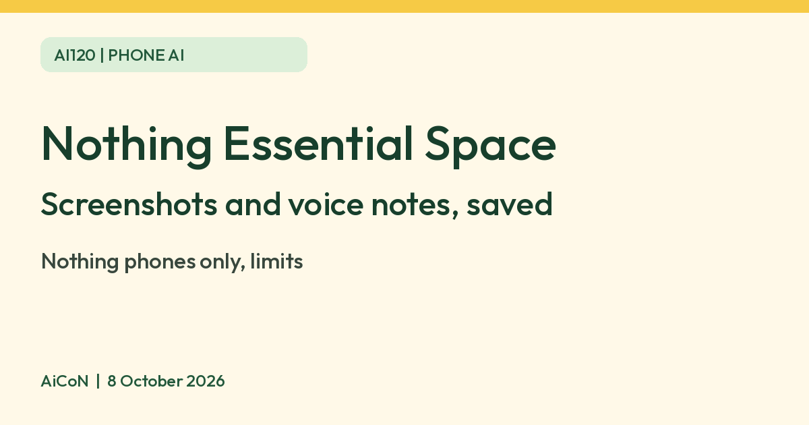

Nothing Essential Space: capture screenshots and voice notes with AI
Essential Space is a place on Nothing phones where screenshots and voice memos saved with the Essential Key are collected. Nothing says AI analysis of your recordings needs you to be logged in to a Nothing account. It is for Nothing phones only.

What it is
Essential Space is a feature on Nothing phones. You save things with the Essential Key, and they collect in one place. Nothing's support pages describe screenshots and voice memos.
How to use it
- Short press the Essential Key to take a screenshot. On the preview, short press again to save it.
- For a voice memo, long press the Essential Key. Recording starts when you reach the preview page and continues until you release the key. Short press to save.
- Double-press the Essential Key to open Essential Space.
What the AI does
Nothing's support page says that when you are logged in to your Nothing account, recorded content goes through intelligent analysis. It says the system makes summary reports of recordings, pulls out key highlights and can extract Google Maps locations. Nothing says you must be logged in to get these AI features.
| Needs | A Nothing phone with the Essential Key, and a Nothing account for AI analysis. |
|---|---|
| Voice notes | Nothing's Nothing OS 5.0 page says Essential Voice can transcribe in over 100 languages. It describes this as part of a beta release. |
| Price | Nothing's support pages mention no separate charge, and we quote none. |
Limits to know
- It works on Nothing phones only. It is not an app for any phone.
- Features differ by phone and software version. Nothing's page says some Essential Space updates arrive later through Google Play, and some are still coming, so check your own phone.
- AI summaries can miss or garble details. Check names, dates and numbers before you act on them.
- Do not record or screenshot private details such as bank pages or OTPs if you do not want them analysed. We did not verify where the analysis is done or how long data is kept.
- We did not test it ourselves.
Frequently asked questions
Do I need a Nothing account?
For the AI analysis, yes, per Nothing's support page.
Can I get it on another brand of phone?
We found no Nothing page saying so.
How do I open it?
Double-press the Essential Key, per Nothing.
Sources: How do I access Essential Space, What is the intelligent analysis of Essential Space, Voice memos with the Essential Key, Nothing OS 5.0 (India). Checked 8 October 2026.